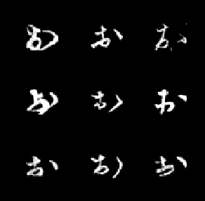
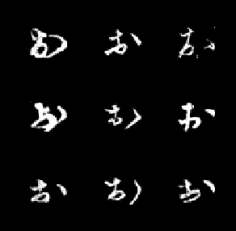

DeepMetamorphose
Maksim Sorokin, Deepak Srikanth, William TidwellFall 2019, CS6476: Computer Vision, Class Project
Georgia Tech
Abstract
We present a point cloud generation methods inspider by art work called Metamorphose by Sergi Cadenas and Matthieu Robert-Ortis. The art work of this style has a multiple appearances and has to be viewed from a specific vantage points. We investigate multiple approaches for point cloud generation, such as Generative Adversarial Networks, Reinforcement Learning, Imitation learning and Two-Player Game. Given two goal images we attempt to generate a three-dimensional point cloud, which represents both goal images when viewed from two different vantage points.Problem Statement
Anamorphosis is a distorted projection of an object that requires the viewer to use special devices, have a certain vantage point, or both, in order to properly view the object. Inspiration for this project comes from the art work of Matthieu Robert-Ortis, the style of which the author has named Métamorphose. Métamorphose builds upon the concept of anamorphosis by combining two anamorphic objects. Generally speaking, from one vantage point the viewer sees one object, and from a different vantage point, he sees a second object. The goal of this project is to develop a model that takes two images as input and generates a 3D object which, if viewed from two specific vantage points, will represent the two original images.Some additional, well-known examples of this are the cover of Gödel, Escher, Bach: An Eternal Golden Braid by Douglas Hofstadter and the logo of the popular deep learning framework TensorFlow.

Approach
Pure Reinforcement Learning
Our intial approach was to train a Reinforcement Learning (RL) agent to create the 3D image, particularly because there is no existing dataset that we know of that can be applied to this problem. More specifically, we implemented the Twin Delayed Deep Deterministic Policy Gradient (TD3) algorithm [5]. TD3 makes use of the Actor-Critic method with a pair of critic networks, as well as a target network. Our implementation also includes a Convolutional Neural Network (CNN) that was used as part of the policy but is a separate network. We also created an OpenAI gym environment with which our agent interacts. The agent takes as input 4 images: the first image is the desired output from the front face, the second image is the desired output from the left face, the third image is the projected view of the drawing thus far from the front face, and the fourth image is the projected view of the drawing thus far from the left face. Each image passes through the CNN, which outputs a feature representation. The four feature representations are then passed to the policy network, which returns an action as an (x, y, z) point in the three-dimensional space. It is at this point that a previously blank pixel will be colored in at the given location. The architecture is demonstrated in the figure below.In order to train an RL agent, careful consideration must be given to the rewards and the rewards schedule. We are used loss as defined in Perceptual Losses for Real-time Style Transfer and Super-Resolution [6]. This loss function combines a pixel loss, a feature loss, and a style loss. This a good fit for our application because, although we want the pixels to match, they do not have to match exactly as long as the features are the same. For example, an image that is translated will have a large pixel loss, but the feature loss will be low, because the content of the image is virtually unchanged. The reward is then defined as the negative of the loss to encourage a smaller loss. The reward schedule was defined such that the drawn image is evaluated after every action. We realize that this may not have been the optimal strategy, because early on in the process, no matter what pixel is colored, the loss is going to be very high. We considered letting the agent color multiple pixels before evaluating its actions and making an update, but we stayed with the original strategy due to time constraints.
The dataset we chose to use with this approach is MNIST [7]. MNIST is a well-known dataset of hand-written digits from 0-9. We chose this dataset to start out with because it is grayscale and the images are small (28x28). The hope was that it would be easier to produce results. In RL, another design decision is the length of an episode, or how long the agent is allowed to interact with the environment before starting again. Because we are filling in pixels, there are a finite number of unique actions that can be taken. In the two-dimensional MNIST space, there 28x28=784 unique actions. However, when viewing the images, it is clear that most of the image is background space. A quick analysis shows that, for the 60,000 training images, the average number of filled pixels is 150 and the standard deviation is 42 pixels. We have set the maximum episode length to 100 steps, because we were filling in a "blob" around the pixel that is output from the network. The diameter of the blob is another hyperparameter being tuned. Had the results been promising, we would have liked to train on a more difficult dataset, such as KMNIST [8].
 

Reinforcement Learning with Imitation Learning
After a good deal of effort with less than promising results on the pure RL approach, we decided to see if we could employ a supervised approach to pre-train the policy followed by using RL to fine-tune the policy. We wanted to first see if this approach was promising, so we attempted it with only a single digit in two-dimensional space. We first selected a subset of images from the digit 0. We took all pixels that were colored and sorted them by (x, y) position. To start the process, the canvas is blank, so the inputs are an image of digit 0 and a blank canvas. The first (x, y) point in the sorted list became the output. Then, that pixel was colored in, and the input became the original image of digit 0 and the newly created image. The output was the second (x, y) point in the sorted list. This continued until all pixels for a given image were filled, at which point we moved to the next image. We used the same CNN and MLP architecture from the agent described above, with the goal of fidning a decent starting point that could be improved upon by the RL training. Unfortunately, we again failed to see promising results, and were forced to reconsider our approach.Two-player Game
Following much frustration and many conversations within the group, one of our members had the idea to approach the problem as a two-player game. Perhaps we could model this as a game where two players work together to fill in their respective images. Consider the coordinate plane below. Imagine Player 1 sees the first input image projected on the XZ plane and Player 2 sees the second input image projected on the YZ plane. Player 1 moves first and chooses an (x, z) coordinate of a pixel to be colored. Player 2 then chooses the corresponding (z) coordinate, and the (x, y, z) point is colored. For the next turn, Player 2 chooses a (y, z) coordinate and Player 1 chooses the (x) coordinate. The players rotate in this manner until the point-cloud is complete. This approach showed very promising results, so we pursued it further, and the full details are outlined below.Inputs
- Two binarized images (im1, im2), each containing a single connected component
- A target height of the point cloud
Pre-processing
- Crop the input images to a bounding box including only the connected component.
- Scale the images to the target height while maintaining their aspect ratios constant.
Two-player game
Player 1’s goal is for the projection of the point cloud onto the XZ plane to resemble im1, and Player 2’s goal is for the projection on the YZ plane to resemble im2.
The point cloud is initially empty, and is built up in an iterative, turn-by-turn process.
A single ‘turn’ proceeds as follows:
Player 1 considers the projection of the point cloud onto the XZ plane (let this be proj1), along with im1. If there are any points in im1 that are not represented in proj1, then one such point (x1, z1) is chosen uniformly at random from this set of possible points.
Player 2 now accepts this choice of (x1, z1), and chooses uniformly at random from a set of y values <y1,y2...yn> such that (x1, yi) are in im2. This new point (x1, yi, z1) is inserted into the point cloud.
In the next turn, Players 1 and 2 switch roles, with Player 2 choosing a (y, z) pair, and Player 1 choosing from a set of (x) coordinates that satisfy im1's requirements, after which the new point is placed in the point-cloud. This process then continues with Players 1 and 2 switching roles each iteration.
This process continues until the point cloud is fully built. This is determined by the projections of the cloud matching im1 and im2. After getting the two binary images to work well, we sought to expand the scope to include color images. The approach was mostly the same, and the results of both are presented below.
Experiments and results
To simplify things and incrementally test our initial approach, we broke our experiments down as follows:List of experiments:
- Overfitting to a single data sample - drawing in 2D
- Training on MNIST dataset - drawing in 2D
- Overfitting to a single data sample - drawing in 3D
- Training on MNIST dataset - drawing in 3D
- Training on larger, more difficult dataset (e.g KMNIST) - drawing in 3D (stretch goal)
We attempted to train the agent to draw a single digit, 0, with mixed results. Below is a short video of the agent during training. We never seemed to improve much beyond these initial results, which is why we moved to the supervised approach. This yielded similar results, and, as such, were not recorded.
Two player Game - Binary
Input images:The two player game model in action. (left) the point-cloud being generated. (center, right) the projections of the point-cloud on two perpendicular planes:

Two player Game - Color
Our method also generalizes to color images. Below are shown the initial results of setup with color extension. Two images of faces are samples from a CelebA dataset.Input images
Resultant Point Cloud
(left) the point-cloud being generated. (center, right) the projections of the point-cloud on two perpendicular planes
Generation process
Conclusion
As is often the case, RL problems are HARD! Given finite time and resources, it can be incredibly difficult or even impossible to get an agent to learn an effective policy. There are multiple reasons why the agent never learned, but what we believe to be the most likely ones are discussed below. The first is that we are dealing with a continuous state space, meaning there are infinite values that can be returned. We are essentially performing a regression, where the poicy returns (x, y, z) values from 0 to 1. Even if we were to discretize the space, in order to make certain the each pixel can be represented, given today's high resolution cameras, we would have to allow at least 5 decimal places, which, for three-dimensional space, is still around 10^12, or 10 trillion possible values. Needless to say, even in this discrete action space, we would need a great deal of data to properly learn and generalize, especially if we wanted to move to real images where every pixel is filled. Another possible reason is the reward structure. As previously discussed, we were providing feedback after every action. However, at the start of any episode, the canvas will be blank, and the drawn image will be very different from the desired image(s). A couple of alternatives were to let the agent make multiple actions before providing any reward or increasing the size of the blob the agent makes at each action. In either case, we would be closer to replicating a painter's brush stroke, which is also more realistic. As for the imitation learning approach, while perhaps still a better approach, it is an inherently difficult problem. MNIST has 60,000 images, each of which has around 100 colored pixels, so this increases our the size of our dataset to over 6 million examples for just the two-dimensional case. For three dimensions, it is even larger, and we would need an appropriately sized network and plenty of time to properly train such a model. This is not to say it cannot be done, and we may continue to pursue this approach, but we have a better idea of what it takes and what to expect moving forward. As for the approach that worked, it took us taking a step back and viewing the problem from a different angle (pun somewhat intended). We have a professor who often says, "Do the dumb thing first and only add intelligence if necessary." We are not sure we would call the final approach dumb, but it certainly is much simpler than our initial approach, and the results are obviously much better. However, we do have a couple of ideas for improvements on the color images that we would like to potentially try. This primarily concerns the way Player 2 (or the second player on the given turn) places the pixel. One idea is, rather than selecting the point uniformly at random from the set of potential pixels, the player should place the pixel at the spot where the color value for im1 is closest to that of im2. We also considered placing multiple pixels and trying to somewhat block out or color over pixels from the other projection that do not match its color scheme.Code
All of the code for the project can be found here. Much of the code was borrowed from previous projects of one of the group members. All libraries used can be found in the environment.yml file, and a list of references can be found below. Any code not from the group members that was used or that gave inspiration is cited in the code files themselves and will be included in the final bibliography. The key libraries/frameworks that we are using are:- Pytorch
- torchvision
- OpenAI gym
- fastai
- matplotlib
- numpy
Bibliography
[1] Generative Adversarial Networks[2] Photo-Realistic Single Image Super-Resolution Using a Generative Adversarial Network
[3] High-Resolution Image Synthesis and Semantic Manipulation with Conditional GANs
[4] Unpaired Image-to-Image Translation using Cycle-Consistent Adversarial Networks
[5] Addressing Fucntion Approximation Error in Actor-Critic Methods
[6] Perceptual Lossesfor Real-Time Style Transfer and Super-Resolution
[7] The MNIST Databse of Handwritten Digits
[8] KMNIST Dataset